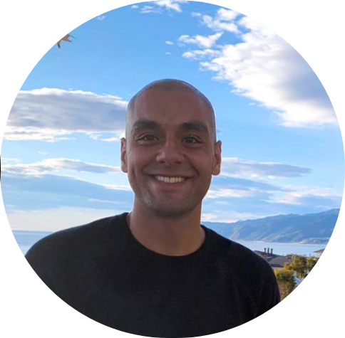

Giving back to the community has been something I've been passionate about since I can remember. I started this non-profit back in 2013 in an effort to achieve integration and co-operation in our duty to fry the community. Our Fry Officers are the best in the nation and never fail to fry up your brain.
Feel free to check out our Officers on social media or reach out to us with any inquiries below!